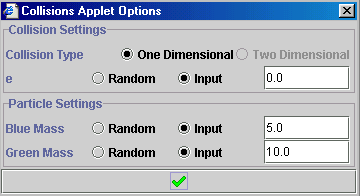
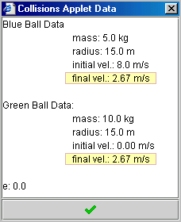
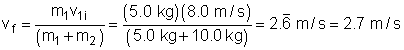
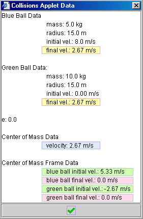
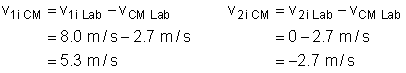
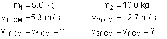
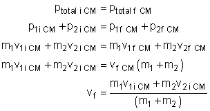
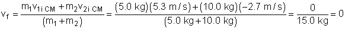
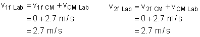
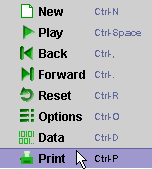

Show Me - Collisions 1D
The Collisions 1D applet simulates elastic and inelastic one-dimensional
collisions in both the lab and centre of mass frames.
Preamble
This applet illustrates conservation of momentum and elasticity in one
dimensional collisions. As well, it shows how collisions may be viewed
from a lab frame and centre of mass frame.
This page is designed to get you started using the applet. The applet
should be open. The step-by-step instructions on this page are to be done
in the applet. You may need to toggle back and forth between instructions
and applet if your screen space is limited.
Contents
Setting Collision Conditions
 Pressing the options button (
Pressing the options button (
 ) opens the Collisions Applet Options box. This box allows you to
control the elasticity of the collision (e) as well as the masses of each
object.
) opens the Collisions Applet Options box. This box allows you to
control the elasticity of the collision (e) as well as the masses of each
object.
By default, the elasticity and masses are set to random - if you run a new
collision, the applet will randomly generate new values. To enter a
specific value, select input
().
The entry box will become active (turn white) and you can enter a value.
Press the
button to close the box. If you have entered specific values, the applet
will keep these values for subsequent collisions.

Looking at Collision Data
Pressing the data button
(
 ) opens the Collisions Applet Data box. This box lists all important
information about the collision - the initial and final velocities,
masses, radii and coefficient of restitution. As well, the data in this
box immediately updates when you change collision conditions - you can
this use this as a collision calculator. Practice using this feature of
the applet:
) opens the Collisions Applet Data box. This box lists all important
information about the collision - the initial and final velocities,
masses, radii and coefficient of restitution. As well, the data in this
box immediately updates when you change collision conditions - you can
this use this as a collision calculator. Practice using this feature of
the applet:
-
Press the data button. Move the data box to the side so that the applet
controls are not covered up.
-
Adjust the velocity. Look at the data box and see how the values for
velocity immediately update.
-
Now press the options button
(
) and vary the value of e and the masses of the balls. Again see how the
data immediately updates.
Collisions in the Lab Frame
The lab frame shows collisions from a laboratory frame of reference. Let's
run an example collision and examine this feature of the applet.
Example:
Perfectly Inelastic Collision Analysed in the Lab Frame
A 5.0
kg ball, moving to the right with a speed of 8.0 m/s, runs into another
ball that is at rest and has a mass of 8.0 kg. The collision is head-on
and perfectly inelastic. What is the speed and direction of the masses
after the collision?
First, let's use the applet to analyse the collision:
-
Press the options button
(
) and set the applet options to match those outlined in the question. To
numerically enter values, check the Input option
(
)
and enter the specific values in the space provided:

- Set the initial velocity of the blue ball to 8.0 m/s.
-
Un-check the "Show CM Frame" and "Show CM" options.
-
Play the applet. You should notice the following:
-
Before: the blue ball moves to the right and the green ball
is at rest
-
After: the balls stick together and move to the right, slower
than the blue ball initially moved.
-
Press the data button,
(
)
to view the collision information. The final velocities have been
highlighted in the image below:

You should see that both balls move to the right with a speed of 2.67 m/s.
Now, let's verify the applet and make sure we can calculate the same
information:
-
First, list the known and unknown variables:

-
Since momentum must be conserved, we use this to solve for the final
velocity:

-
Now, we can substitute in our values:

We discover that the green ball moves to the right with a velocity of 2.7
m/s. Our calculations match the applet.
Collisions in the Centre of Mass Frame
The centre of mass frame shows collisions from the centre of mass (CM)
frame of reference. In this frame the CM is always held at rest. As an
observer, it is though you are standing at the centre of mass. Using the
same example as above, let's analyse a collision from the CM frame of
reference.
Example:
Perfectly Inelastic Collision Analysed in the Centre of Mass Frame
A 5.0 kg ball, moving to the right with a speed of 8.0 m/s, runs into
another ball that is at rest and has a mass of 8.0 kg. The collision is
head-on and perfectly inelastic. What is the speed and direction of the
masses after the collision?
First, let's use the applet to analyse the collision:
-
Press the options button
(
) and set the applet options to match those outlined in the question.
- Set the initial velocity of the blue ball to 8.0 m/s.
-
Make sure that "Show CM Frame" and "Show CM" are
both checked on.
-
Play the applet and look at the top half of the applet - this shows that
collision from the centre of mass frame. You should notice the
following:
-
Before: the blue ball moves to the right and the green ball
moves to the left. The blue ball moves more quickly. The centre of
mass (the red dot) does not move at all - it is at rest.
-
After: the balls stick together at the centre of mass and do
not move. Notice that the centre of mass is slightly closer to the
green ball - this is because the green ball is more massive.
-
Press the data button,
(
)
to view the collision information:
-
The box will contain data from both the lab frame and the
centre of mass frame
-
Under Centre of mass Data you will find the following
information listed:
-
velocity of the CM (highlighted in blue)
-
initial velocities of the masses (highlighted in
green)
-
final velocities of the masses (highlighted in
pink)
|

|
You should see that in the CM frame, the final velocity of both balls is
0, but in the lab frame, the final velocity is 2.67 m/s. Now, let's verify
the applet and make sure we can calculate the same information.
Note - for significant digits, round off when you write them down,
but not when you are doing calculations.
-
We must switch into the CM frame. To do this, we first need to know the
velocity of the CM in the lab frame:

-
Now, we must make the motion of the blue and green balls relative to the
CM:

-
Now let's list our known and unknown variables:

-
Since momentum must be conserved, we use this to solve for the final
velocity:

-
Now, substitute in values to find the final velocity of the balls in the
CM frame:

-
Let's switch back into the lab frame:

According to our calculations and the applet, in the CM frame, the system
comes to rest after the collision - the final velocities are zero.
However, in the Lab Frame, the balls move to the right with a velocity of
2.7 m/s, but so does the CM. Make sure you understand the difference
between the two frames of reference.
Advanced Features
Printing the Screen:
If you have access to a printer you can print the display panel by
right mouse clicking once in the display panel. A menu will appear
just like the one shown on the right. Select the print option.
|

|